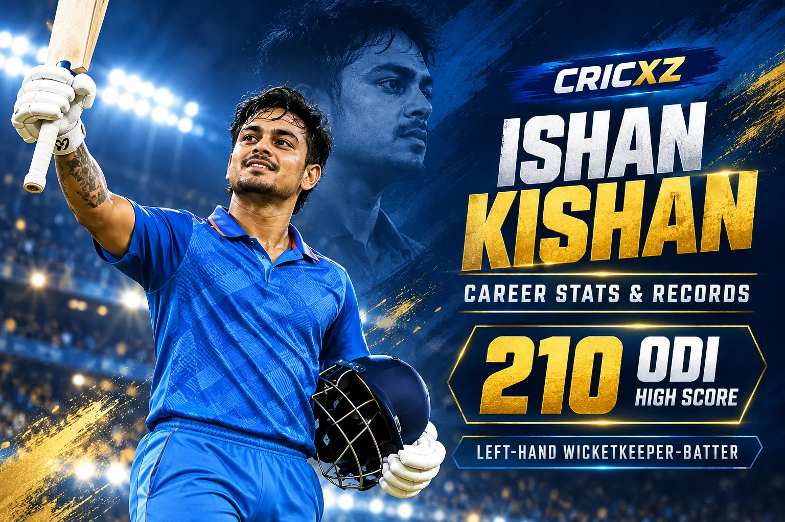
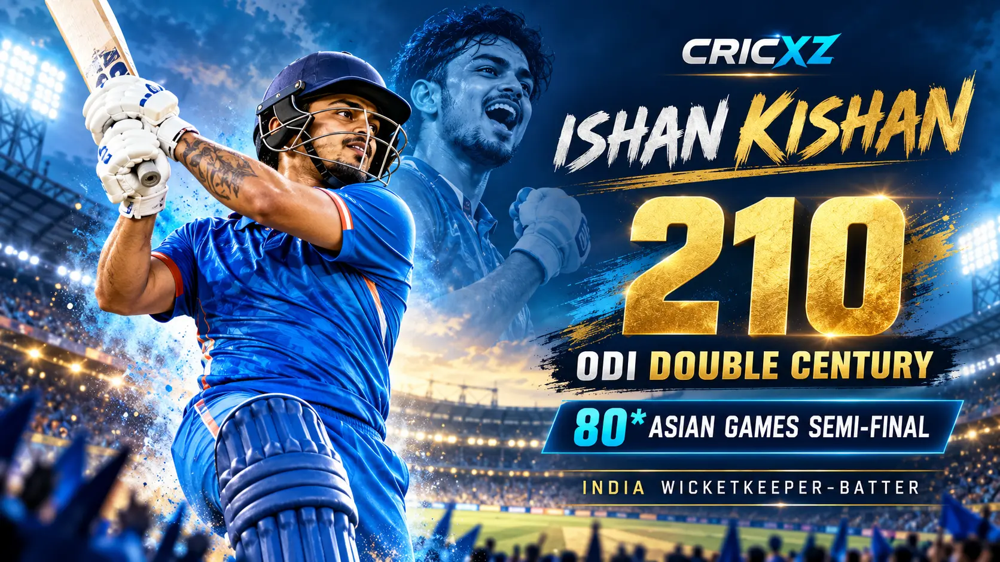

Test Career
- Matches
- 2
- Runs
- 78
- Batting average
- 78.00
- Highest score
- 52*
- Hundreds / Fifties
- 0 / 1

Ishan Kishan is an attacking India wicketkeeper-batter whose international record includes a 210 in ODI cricket, a T20I hundred and an Asian Games gold medal. He has also been a prominent top-order player in the IPL.
Career statistics are current through the second India–West Indies T20I on 9 October 2026.
Ishan remains an active player, so these figures may change after his next appearance. His T20I snapshot includes scores of 37 not out and 43 in the first two matches of the current series.
Ishan combines wicketkeeping versatility with an aggressive approach at the top of the order. His ability to attack pace and spin has earned him roles across all three international formats and in high-pressure domestic competitions.

Kishan's 210 against Bangladesh at Chattogram in December 2022 remains the defining innings of his ODI career. He reached the double century from 126 balls and became the youngest men's ODI double-centurion at the time.
At the 2026 Asian Games, he scored an unbeaten 80 from 46 balls as India defeated Sri Lanka by 124 runs in the semi-final. India subsequently beat Pakistan to win the men's cricket gold medal.
Ishan supported captain Shreyas Iyer with an unbeaten 37 in India's eight-wicket victory in the first T20I. He followed it with 43 from 22 balls in Ranchi, contributing to India's 249/5 before West Indies completed a record chase in the second T20I.
The two innings added 80 runs to his career tally and showed his value as a flexible top-order partner in India's evolving T20I lineup.
Debut: 12 July 2023
Made his Test debut against West Indies at Roseau and registered a maiden fifty in his second Test.
Debut: 18 July 2021
Made his ODI debut against Sri Lanka in Colombo and later produced a career-best 210 against Bangladesh.
Debut: 14 March 2021
Scored a fifty on debut against England and reached 63 appearances during the second West Indies T20I in October 2026.
Recorded a career-best 210 against Bangladesh at Chattogram in 2022.
Reached 200 in fewer balls than any men's ODI batter had previously managed.
Anchored India to 169/7 before Sri Lanka were dismissed for 45.
Registered his first T20I hundred as an attacking opening batter.
Led India to the final of the ICC Under-19 World Cup.
Produced one of the standout first-class innings by a Jharkhand batter.
Member of India's gold-medal-winning men's cricket team in 2026.
Converted two ODI innings into centuries, including his double hundred.
Added a three-figure score to a record containing 13 T20I fifties.
Contributed to title-winning Mumbai Indians campaigns.
Career statistics and recent-match details were checked on 10 October 2026.
Read India's first-T20I victory led by Shreyas Iyer, review the second-T20I record chase in Ranchi, or revisit India's Asian Games gold-medal win over Pakistan.